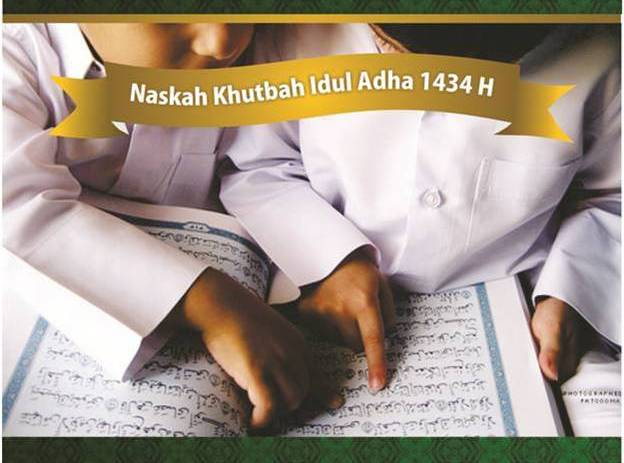

Anak Sholeh,Jalan masuk surga

- إِنَّ الْحَمْدَ لِلَّهِ نَحْمَدُهُ وَنَسْتَعِيْنُهُ وَنَسْتَغْفِرُهُ وَنَعُوذُ ِباللهِ مِنْ شُرُوْرِ أَنْفُسِنَا وَمِنْ سَيِّئَاتِ أَعْمَالِنَا، مَنْ يَهْدِهِ فَلاَ مُضِلَّ لَهُ وَمَنْ يُضْلِلْ فَلاَ هَادِيَ لَهُ. أَشْهَدُ أَنْ لاَ إِلَهَ إِلاَّ الله وَأَشْهَدُ أَنَّ مُحَمَّدًا عَبْدُهُ وَرَسُوْلُهُ يَا أَيُّهاَ الَّذِيْنَ ءَامَنُوا اتَّقُوا اللهَ حَقَّ تُقَاتِهِ وَلاَ تَمُوْتُنَّ إِلاَّ وَأَنتُمْ مُّسْلِمُوْنَ. يَا أَيُّهَا النَّاسُ اتَّقُوْا رَبَّكُمُ الَّذِيْ خَلَقَكُمْ مِّنْ نَفْسٍ وَاحِدَةٍ وَخَلَقَ مِنْهَا زَوْجَهَا وَبَثَّ مِنْهُمَا رِجَالاً كَثِيْرًا وَنِسَآءً وَاتَّقُوا اللهَ الَّذِيْ تَسَآءَلُوْنَ بِهِ وَاْلأَرْحَامَ إِنَّ اللهَ كَانَ عَلَيْكُمْ رَقِيْبًا. يَا أَيُّهَا الَّذِيْنَ ءَامَنُوا اتَّقُوا اللهَ وَقُوْلُوْا قَوْلاً سَدِيْدًا. يُصْلِحْ لَكُمْ أَعْمَالَكُمْ وَيَغْفِرْ لَكُمْ ذُنُوْبَكُمْ وَمَنْ يُطِعِ اللهَ وَرَسُوْلَهُ فَقَدْ فَازَ فَوْزًا عَظِيْمًا. أَمَّابَعْدُ؛ فَإِنَّ خَيْرَ الْحَدِيثِ كِتَابُ اللهَ، وَخَيْرَ الهَدْيِ هَدْيُ مُحَمَّدٍ صَلَّى الله عَلَيْهِ وَسَلَّمَ وَشَرَّ الأُمُورِ مُحْدَثَاتُهَا وَكُلَّ مُحْدَثَةٍ بِدْعَةٌ وَكُلَّ بِدْعَةٍ ضَلاَلَةٌ وَكُلَّ ضَلاَلَةٍ فِي النَّارِ Allahu akbar, Allahu akbar la ilaha illaLlahu Allahu akbar walillahilhamd Kaum muslimin yang berbahagia! Hari ini, kita kembali menjadi saksi betapa luasnya kasih-sayang Allah Azza wa Jalla kepada kita semua. Pagi hari ini, kita kembali merasakan betapa besarnya rahmat dan ampunanNya untuk kita semua. Dosa demi dosa kita kerjakan nyaris sepanjang hari. Perintah demi perintahNya hampir kita abaikan setiap saat. Tapi lihatlah, Allah Azza wa Jalla yang Maha Pengasih itu tidak pernah bosan memberikan kesempatan demi kesempatan kepada kita untuk bertaubat dan kembali padaNya. Allah Azza wa Jalla yang Maha Penyayang itu tidak pernah menutup pintu ampunanNya yang luas. Allahu akbar, Allahu akbar, la ilaha illaLlahu Allahu akbar walillahilhmad Kaum muslimin yang berbahagia! Hari Raya Idul Adha adalah kisah tentang sebuah keluarga mulia yang diabadikan oleh Allah Azza wa Jalla untuk peradaban manusia. Itulah kisah keluarga Ibrahim ‘alaihissalam. Melalui kisah keluarga Ibrahim ‘alaihissalam itu, Allah Ta’ala ingin menunjukkan kepada kita betapa pentingnya posisi keluarga dalam membangun sebuah peradaban yang besar. Sebuah masyarakat yang bahagia dan sejahtera, tidak hanya di dunia, namun juga di akhirat. Sumber Tulisan: http://wahdah.or.id/khutbah-idul-adha-anak-shaleh-jalan-surga-orangtua/